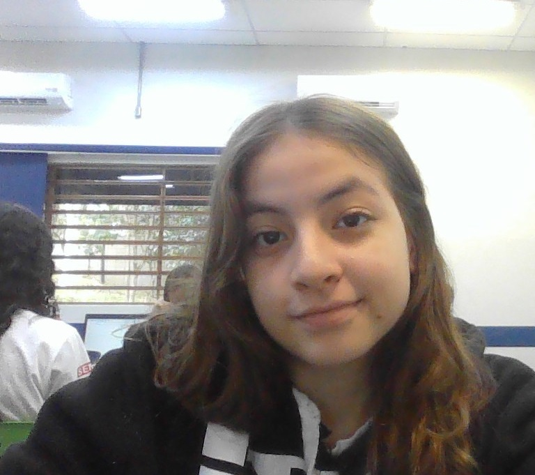

Esse site foi desenvolvido pela aluna Jade Lisboa, na
escola SENAI Sumaré, onde cursa "Desenvolvimento de sistemas".
Com prazo de 3 horas de entrega e publicação no Github da aluna.

CLIQUE AQUI PARA ACESSAR A VISUALIZAÇÃO NO GITHUB.